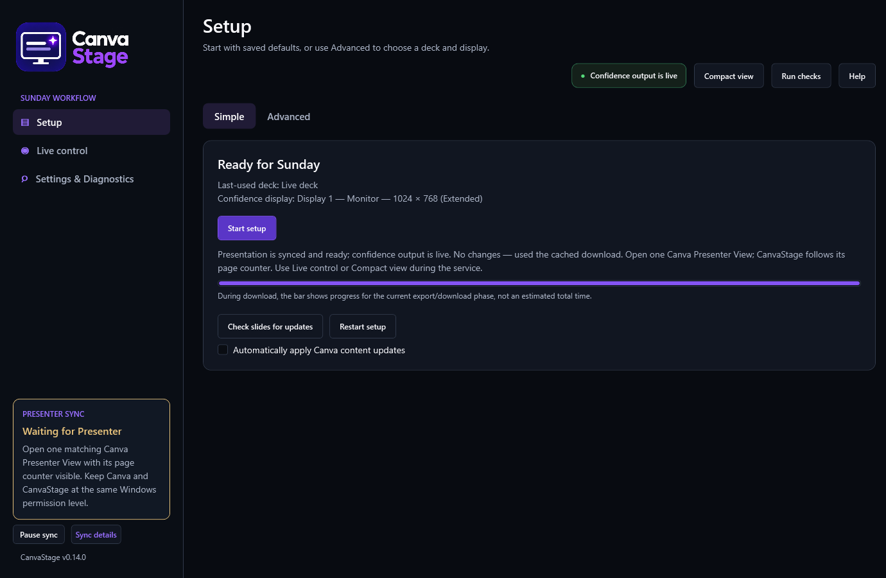
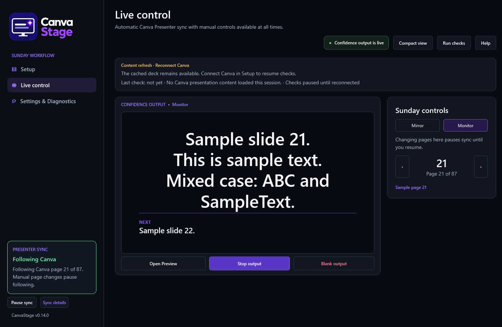
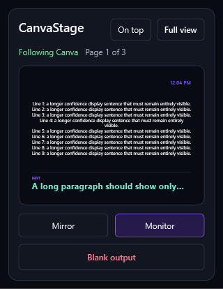

Use these steps if the computer already has a saved Canva connection, presentation, and confidence display.
CanvaStage reuses an unchanged presentation if it can verify that the saved download is complete. If the content has changed or the download is incomplete, it downloads the presentation before starting output. Large exports can take several minutes. The progress bar shows the current phase, not the total time remaining.

CanvaStage excludes hidden slides from its page numbering. If its visible-page total does not match Presenter View, it stays on the last page instead of guessing. See sync troubleshooting.
The Presenter card in the sidebar shows the current status, a matching outline and a short explanation or recovery step. Pause/Resume and Sync details sit beneath it. In narrow or short windows, those controls appear below the page title. Canva's accessibility updates and scan time affect following delay. For immediate slide changes, leave fades off; optional clocks and fades are in Settings & Diagnostics.
Choose Live control in the menu to see the output preview and Sunday controls.
The previous/next arrows in Sunday controls let you choose a page manually, but doing so pauses following. Choose Resume sync near the following status to return to the current Canva Presenter page.


Compact view has no Pause Sync button. Use Full view to manage following.
The in-app preview and Open Preview copy the confidence display's layout, so text wraps the same way. Resizing Preview may leave empty borders. Before the service, check the physical monitor too. The preview cannot tell you whether a cable or wireless display is receiving the image.
For a three-screen fallback that shows the audience presentation on both external screens, use Mirror the audience screen in Advanced Setup. It asks for confirmation and stops separate confidence output. Restore the saved Extended layout before starting confidence output again.
If the remembered confidence screen disconnects, reconnect it in Windows using Extend. CanvaStage may offer to start output on that named screen using the current cached deck, without repeating Setup or downloading it again. Choose Yes only if the named screen is correct; No keeps output off. If you stopped output manually, use Start output or Start setup when ready instead.
Return to Full view, choose Stop output, then close CanvaStage. Closing the app closes its windows and keeps the deck, connection, and preferences. You do not need Disconnect or Clear cache for normal shutdown.
If a full-screen confidence window blocks your screen, focus it and press Escape, or hover over its upper-right corner to reveal the close button.
These work while the main CanvaStage window has focus, including Compact view.
| Shortcut | Action |
|---|---|
| Ctrl+Left / Ctrl+Right | Previous / next page; pauses following |
| Ctrl+Space | Pause / resume following |
| Ctrl+B | Blank / restore output |
| Ctrl+1 / Ctrl+2 | Mirror / Monitor |
| F1 | Open the help guide for this app version in your browser |